Most Indian D2C return rates quoted at industry panels sit between 12% and 15%. That number is the reverse logistics bill divided by orders. It does not include forward freight on parcels refused at the door, the acquisition cost already paid on the customer who refused, or the output GST that can no longer be recovered. Once those are added, the actual cost of a return in India runs three to four times the figure that typically appears on the P&L.
The mismatch is the heart of the problem. Indian e-commerce isn’t bad at returns because its logistics are weak — it’s bad at returns because almost no one in the stack is counting them properly. Once they’re counted properly, three things become obvious from the published data. One of them is the lever almost nobody is actually pulling.
What a return really costs
Open any typical D2C P&L and you’ll find a line called “reverse logistics” sitting between ₹80 and ₹120 a parcel. That is the number that gets quoted on panels. It’s also incomplete.
A COD refusal costs you forward freight you can’t claw back. Reverse freight to pull the parcel home. Repackaging and QC once it arrives. Inventory sitting blocked while it’s in transit. And the one line that rarely gets allocated — the ₹220 to ₹660 of marketing spend you paid to acquire the customer who just refused you.
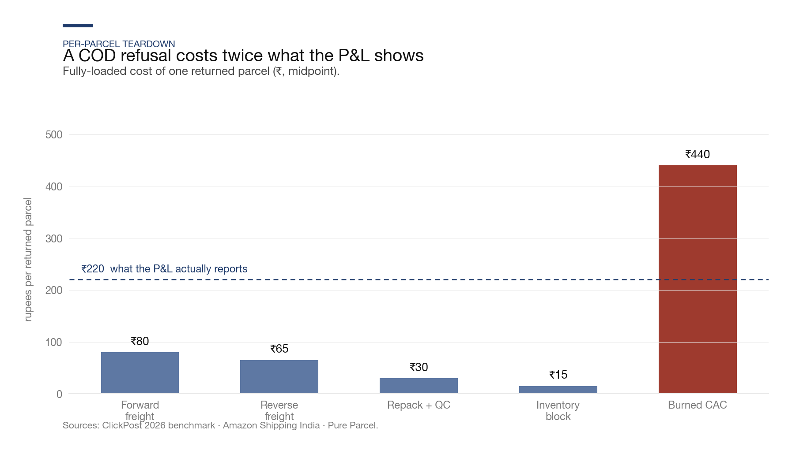
Stack the lot and an average Indian COD-RTO is costing ₹450 to ₹900. On a ₹999 AOV, that’s 45% to 90% of a full order going up in smoke every time the parcel comes back unopened.
The reason the finance team doesn’t see this is that the costs live in three different ledgers. Freight sits in operations. CAC sits in marketing. Repackaging and holding costs sit in warehouse ops. The person who could stitch them together is the CFO, and the CFO is looking at a monthly P&L, not a per-parcel teardown.
Call this the ₹120 fiction. Most of the industry still works with it.
There are actually two problems here
A post-delivery return and an RTO look identical on a P&L line. They are nothing alike underneath.
A post-delivery return is a fit failure. The customer took the parcel in, tried it on, didn’t like it, sent it back. The lever is sizing and photography — a size quiz, a model-is-5’8’’-wearing-M caption, better product shots. Nykaa Fashion worked on this for two years and watched contribution margin crawl from 2.7% to 7.9%. Slow and real.
An RTO is a commitment failure. The parcel never gets opened. The customer isn’t rejecting your product — they’re rejecting the inconvenience of paying for it, in cash, to a courier they weren’t expecting, in that moment. A better size chart does nothing for this.
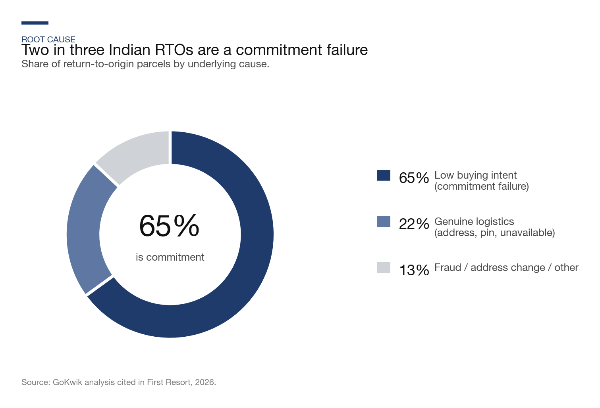
Most of the Indian returns conversation lumps these together, which is why most of the Indian returns conversation ends up recommending things that don’t work on the problem you actually have.
The COD chart worth staring at for a minute
In FY23, the return rate on COD orders in India was 20.9%. The return rate on prepaid orders was 5.8%. A 3.6× gap. The obvious conclusion: if shoppers can be nudged toward prepaid, there are significant savings on the table. It is a chart that appears in a lot of Indian D2C strategy decks.
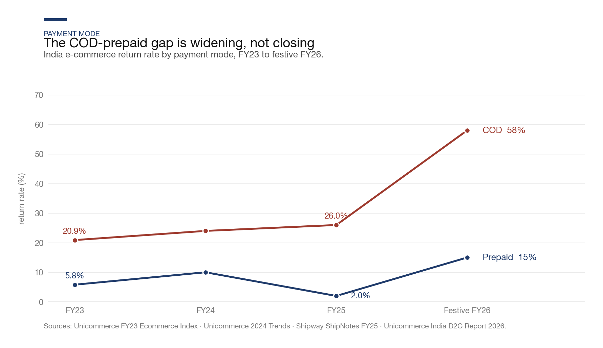
So — did it work?
Not really. Three years on, the gap has widened, not closed. COD return rates have gone up, not down. During the festive FY26 quarter (when discounts are deepest and new customers pour in), the COD rate hit 58%. For every 10 parcels you shipped, six came back.
What the data points to is that when an Indian shopper picks cash on delivery, the choice is not really a payment method. It is an option — specifically, the option to walk away from the deal at the doorstep after a chance to look at the box. A free option. The industry doesn’t usually describe it in those terms because nobody prints “option value” on a checkout button.
The standard answer is to make prepaid more attractive — small discount, free shipping, loyalty points. Brands have been running versions of this for a decade. The gap in the published data hasn’t moved. There is no obvious mechanism in current checkout practice that would move it.
A different approach has quietly started showing results.
Pay-later is the lever most teams aren’t looking at
The real alternative to COD in India isn’t prepaid — it’s pay-later. Simpl, LazyPay, Snapmint, ZestMoney. The customer still doesn’t part with cash today. But a credit line has been pulled. An NBFC is on the hook. A CIBIL score is in play. The psychological free-walk-away at the door is removed.
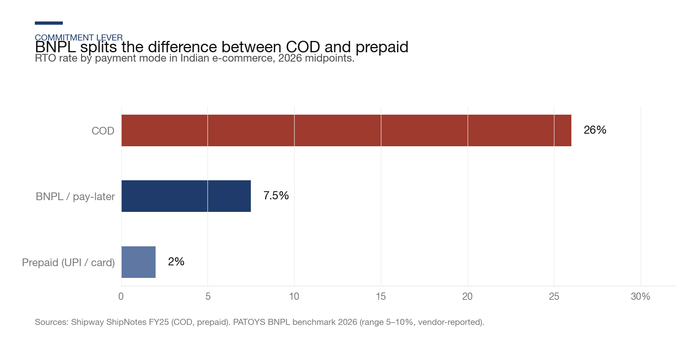
The data on BNPL return rates is thin and skews vendor-reported. The direction, however, is consistent across the available public sources: pay-later parcels come back at roughly a third the rate of COD, closer to prepaid than to COD on the commitment axis. Snapmint’s own founder-facing content pitches BNPL to brands as “the way to shift COD customers to committed payment without losing conversion.” A 2025 study in the Journal of Informatics Education and Research found that BNPL raises conversion and average basket size at the same time — evidence that it operates as a distinct commitment vehicle, not a COD proxy.
The per-order math
| Payment mode (same ₹999 SKU) | Return / RTO rate | RTO drag per order | CM per order shipped |
|---|---|---|---|
| COD | 26% | (₹118) | ₹78 |
| BNPL / pay-later | 7.5% | (₹34) | ₹162 |
| Prepaid (UPI / card) | 2% | (₹9) | ₹187 |
BNPL recaptures about 85% of the COD-to-prepaid margin gap, and it does it without asking the customer to pay anything upfront. That last bit matters more than the math on paper suggests, because almost every historical attempt to move Indian shoppers off COD has foundered on exactly that upfront-cash ask.
Doesn’t the BNPL fee eat the saving?
The obvious objection: BNPL providers charge the merchant 2 to 4% plus GST — higher than UPI’s zero MDR, higher than a basic card transaction. Shouldn’t that extra fee wipe out whatever is saved on RTO?
On the public rate cards, for short-tenure BNPL (Simpl pay-in-30, LazyPay pay-in-15, Snapmint) it doesn’t. Not even close. For long-tenure no-cost EMI, it almost does — but not quite.
| Migration path | Fee delta | RTO saving | Net per order |
|---|---|---|---|
| COD (₹36) → UPI direct (₹24) | −₹12 (cheaper) | +₹108 | +₹120 |
| COD → BNPL pay-in-15 via Razorpay | −₹12 (cheaper) | +₹83 | +₹95 |
| COD → BNPL direct (Simpl MDR 3%) | +₹5 | +₹83 | +₹78 |
| COD → 6-month no-cost EMI | +₹25 | +₹83 | +₹58 |
| COD → 12-month no-cost EMI | +₹51 | +₹83 | +₹32 |
Fees from Razorpay and Cashfree public rate cards (2026). RTO cost based on 18.5 pp rate reduction × ₹450 fully-loaded per failed parcel.
For short-tenure BNPL via a standard gateway, the merchant fee is roughly the same as the COD handling fee. Sometimes lower. So the ₹83 saved per order from the RTO reduction is mostly pure margin — the fee pays for itself around fifteen times over. For long-tenure EMI the subvention gets heavy, the saving shrinks to about 2× cover, and only if the RTO rate on the EMI cohort behaves the same way as pay-in-15 — on expensive electronics and furniture, which is where long-tenure EMI concentrates, the empirical return rate on EMI cohorts tends to run meaningfully higher.
The second-order effect
The RTO saving is not the larger part of the BNPL story. It is the smaller half.
Independent research on Indian BNPL shoppers finds that the AOV lift — the “pain of payment” effect — is roughly the same magnitude as the RTO saving, and layers on top. A Chennai field study in 2025 (n=350) measured BNPL users spending ₹1,840 on average before adoption and ₹2,030 after, a 10.3% lift with p<0.05. A Stripe A/B test across 150,000 global checkout sessions found up to 14% revenue lift from BNPL eligibility, combining conversion and basket size. The vendors claim bigger numbers (Cashfree quotes 40% AOV, Simpl 30–40%), but those are self-reported cohorts and should be discounted by roughly 3× against the independent evidence before planning on them.
Anchoring on the independent 10% AOV lift, the economics compound:
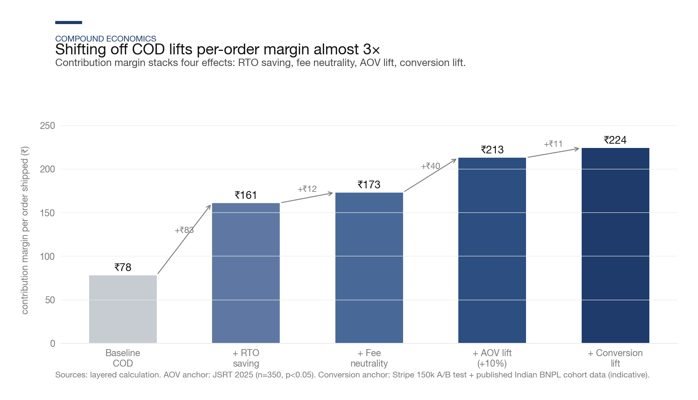
Per-order CM goes from ₹78 to ₹224. Roughly a 2.9× lift. And the AOV line alone contributes ₹40 per order — nearly half the value of the RTO saving. Which is why, when you listen to Simpl or Cashfree pitching to a brand, they almost never lead with the RTO reduction. They lead with the AOV lift. Honest selling, actually.
One caveat worth naming. The same mechanism that lifts AOV (lower pain of payment) also encourages impulse buying. Published cohort data shows post-delivery returns on BNPL orders running 1 to 3 percentage points higher than prepaid. The net is still clearly positive — the RTO saving dwarfs the impulse-return bump — but modelling only the flattering half of this will overstate the gain.
Monthly P&L view — 10,000-orders brand, 60% COD → 30% COD / 30% BNPL
| P&L line | Baseline | Optimised | Delta |
|---|---|---|---|
| Monthly orders shipped | 10,000 | 10,500 (+5% conv.) | +500 |
| Blended AOV | ₹999 | ₹1,029 (BNPL +10%) | +₹30 |
| Gross revenue | ₹99.9 L | ₹1.08 Cr | +₹8.1 L |
| RTO parcels (blended) | ~1,780 (17.8%) | ~1,165 (11.1%) | −615 |
| RTO fully-loaded cost | (₹8.0 L) | (₹5.2 L) | +₹2.8 L |
| Payment processor fees | (₹2.9 L) | (₹3.1 L) | (₹0.2 L) |
| GST on returns (missed window) | (₹1.2 L) | (₹0.5 L) | +₹0.7 L |
| Operating result | ₹3.7 L | ₹15.1 L | +₹11.4 L |
| Margin on net revenue | 4.4% | 16.6% | +1,220 bps |
That’s roughly ₹11 lakh of extra operating profit a month, from a payment-mode shift that costs nothing to implement beyond reordering the checkout. Few Indian D2C brands have moved on this at scale; most are still running the same “shift to prepaid” campaigns that have been failing for a decade.
The short version: pay-in-15 BNPL works as a COD replacement. Long-tenure no-cost EMI should be reserved for genuine affordability categories (furniture, electronics above ₹8,000). The two are structurally different products and conflating them is where the economics typically go wrong.
The dual-pricing trick Meesho has been running for four years
One more under-discussed lever: Meesho has been running two prices on the same SKU, at checkout, since 2022. One with free returns. One a bit cheaper, no returns allowed. Customer picks.
Their published numbers are striking. Over 30% of delivered orders opt for the no-return price. That cohort returns around 10% less than the return-eligible cohort. Myntra tried a lighter version of this in 2019, offering up to 4% off for picking “non-returnable.” Both work. The real design question is: how much of a discount should you actually offer?
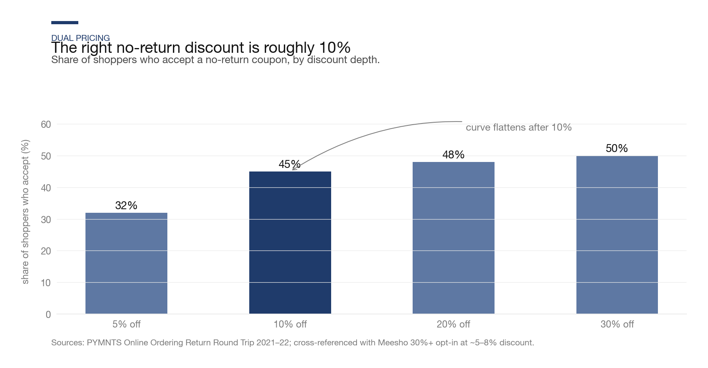
The curve flattens hard after 10%. Every rupee of extra discount beyond that buys you almost no new opt-ins, while giving away full-value revenue on the entire opt-in base. So the correct answer isn’t “the biggest discount you can afford.” It’s the smallest one that clears the behavioural threshold. For Indian shoppers that threshold sits around 10%.
P&L impact of a 10% no-return coupon at 45% opt-in
| Line (per order shipped, ₹999 SKU, 30% baseline return rate) | Before | After coupon live |
|---|---|---|
| AOV | ₹999 | ₹954 (blended) |
| Opt-in orders (45%) | — | ₹899 price, 0% returns |
| Opt-out orders (55%) | — | ₹999 price, 30% return rate |
| RTO / return drag | (₹135) | (₹74) — 45% less |
| CM per order shipped | ₹180 | ₹225 |
| CM uplift | — | +25% |
The only honest limit worth knowing about this lever comes from Return Prime’s founder, who ran these campaigns for a lot of Indian D2C brands:
“Eliminating returns entirely leads to a drop in GMV of up to 50%. Almost 85% of shoppers remain loyal to companies that offer easy returns.” — Return Prime founder, via trade commentary
So the right design is not to kill returns. It’s to offer both options, price the difference correctly, and let the customer self-select. Price discrimination, not restriction. Meesho worked this out four years ago and still barely anyone is copying it.
The fashion category is worse than people admit
Everything above is baseline. Fashion is its own problem. The return rate inside apparel has a predictable gradient, and it maps almost exactly to how precisely the garment has to fit a human body.
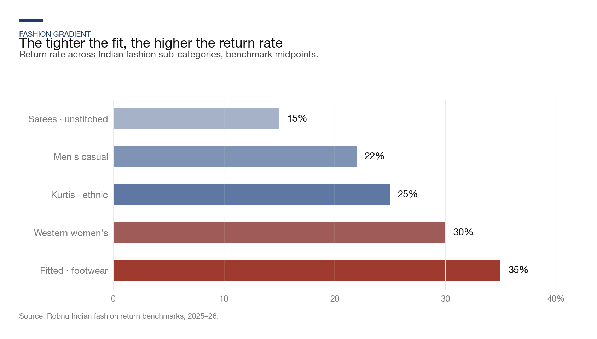
Which has a practical consequence. The “15% returns” benchmark the founder brochures like to cite? That’s for the saree-and-men’s-tee end of the gradient. A women’s western wear brand reporting 15% is either understating or structurally exceptional. 30% is honest. 35% is where footwear actually sits.
The practical consequence is significant: the entire pricing model for a lot of early-stage apparel D2C brands is built on a 15% return assumption. When the actual rate turns out to be 30% in women’s western wear or 35% in footwear, the unit economics modelled at launch don’t survive the first full quarter of trading.
Why the fit side is slow to move
Bigger size charts, tighter photography, size quizzes at checkout — the obvious playbook has been in use for several years at every serious Indian apparel D2C brand. Progress has been slow. Nykaa Fashion’s contribution margin crawling from 2.7% to 7.9% over two years of focused work looks like the correct magnitude for how hard this lever actually moves.
One small directional signal, from an author-run 2021 survey of 22 urban Indian online shoppers. It was fielded in January 2021, early in the author’s product-management career and at the start of working on this problem — so treat it as what it is: a new PM’s first stab at primary research, small convenience sample, directional only.
The four headline numbers:
- 73% always check the size chart before buying.
- 55% knew a single brand can have different measurements under the same size tag.
- 45% called that idea “absurd,” rejecting the premise of within-brand size drift.
- Only 36% got all three “textbook” fit questions right (always-check-chart + knows-drift + knows size ≠ fit).
Then the uncomfortable cross-tab:
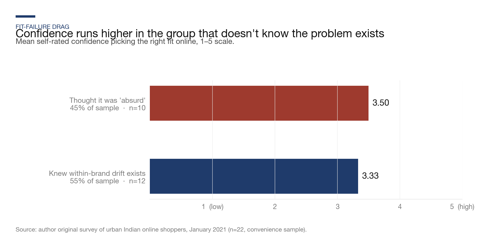
The group that didn’t believe within-brand drift exists rated themselves more confident picking the right fit than the group that did. A Dunning-Kruger pattern — small sample, but directionally intuitive. The shoppers with the biggest sizing-knowledge gap are also the ones least likely to reach for the chart, because they don’t think there’s a problem to solve.
Which recasts what works on the fit side of returns:
- A better size chart does nothing for the 45%. They’ve already decided they don’t need it.
- A size quiz forced into the checkout flow (not optional) can reach them.
- A “last time you ordered size M at this brand you returned it” prompt reaches them more reliably.
- A “80% of customers 5’8’’ bought size M here” cue reframes the question from what’s my size to what fits people like me — the single most effective pattern for the unaware-but-confident cohort.
The lever on the fit side isn’t chart UX. It’s forcing friction against a belief the shopper doesn’t know they hold. That’s structurally slower to shift than removing a free walk-away option at the door — which is why the fit-side numbers move at hundreds of basis points per year, and the RTO-side numbers can move in a quarter.
The tax layer almost nobody puts in the model
India is unusual among major e-commerce markets in that the tax clock starts the day the parcel ships.
Section 34(2) of the CGST Act sets a hard deadline. A credit note for a returned sale has to be reported on GSTR-1 by 30 November following the end of the financial year the sale happened in. Miss the window and the 18% output GST you booked on that sale is gone. You’ve already refunded the customer. The taxman keeps the GST anyway.
The three tax layers a return silently adds
| Layer | What it is | Recoverable? |
|---|---|---|
| Irrecoverable-GST risk | Miss the Section 34(2) window → output GST becomes sunk cost | Only within the window |
| TCS reconciliation drag | Every return creates a negative TCS entry in GSTR-2B, 1–2 months later, tracked per AWB | TCS yes, staff-time no |
| ITC reversal on write-offs | Returned units written off → input tax credit on raw materials must be reversed under Section 17(5)(h) | No — absolute cost |
Sources: CBIC Section 34(2) and Section 17(5)(h); Grant Thornton India GST Compliance Booklet April 2026.
This layer rarely surfaces in operational reviews. Not because finance teams are careless — because the CA tracks GST at a GSTR-level aggregate, and almost nobody breaks it down per-RTO. A finance team that does that one piece of work typically surfaces 100 to 200 basis points of EBITDA leakage that nobody was tracking.
What Honasa and Nykaa are quietly telling the market
Most listed Indian e-commerce companies bury their return costs inside “other operating expenses.” Two don’t, and reading their disclosures carefully is probably the most useful few hours anyone looking at this industry can spend.
Honasa Consumer, Q4 FY25 — a ₹63.5 crore return provision
In FY25 Honasa (Mamaearth, The Derma Co.) executed a distribution shift called Project Neev. Returning distributor inventory booked a one-time ₹63.5 crore provision. Here is what their CFO Raman Preet Sohi said when asked why the hit was so much larger than the market expected:
“The ₹63 crores inventory impact means this is returns coming back to the company… we make 70% gross margin. So we lose that 70% gross margin on the return inventory. And along with that … inventory provision … trade loss related provision … impacting this close to 10.7% impact from a year-on-year perspective on our EBITDA margins.” — Raman Preet Sohi, CFO Honasa Consumer, Q4 FY25 analyst call
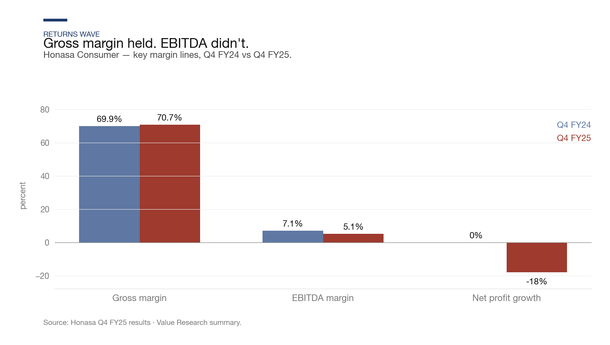
Gross margin went up. EBITDA margin dropped 200 basis points. Net profit fell 18% despite 13% revenue growth. This is what a return wave looks like when it hits a listed P&L — the top of the funnel looks healthy and the bottom is quietly collapsing because the return cost shows up a layer down from gross.
Nykaa, FY25 — the beauty-versus-fashion split
Nykaa is useful because it runs two businesses inside one company. Beauty, where return rates are 4–12%. Fashion, where they’re 11–30%. Same CFO. Same ops team. Same cost of capital. Same board.
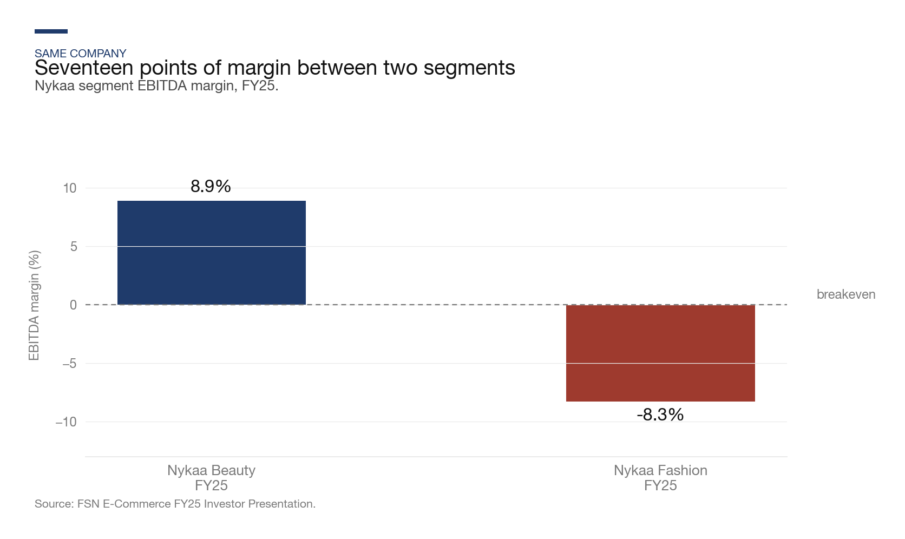
A 17-percentage-point gap in EBITDA margin between two segments of the same company. The structural variable that differs between them is the return rate. That’s it. Everything else is roughly equal.
Nykaa Fashion grew 27% YoY and expanded gross margin 419 bps, and still lost 8.3% at EBITDA. Their own analyst-day commitment is that fashion turns EBITDA-breakeven only when contribution margin crosses ~11%, which requires another 300 bps of return reduction from where they are. If they can’t get there, the fashion segment has a structural ceiling the market hasn’t fully priced yet.
There isn’t a path to profit for Indian fashion e-commerce that doesn’t run through the return rate. Everything else is downstream.
What the recovery data actually shows
Between November 2025 and March 2026 a cohort of Indian D2C brands sitting inside Unicommerce’s 410M-shipment dataset ran the same three operational changes. Same brands. Same customers. Their RTO rate went from 39.2% to 21% in four months.
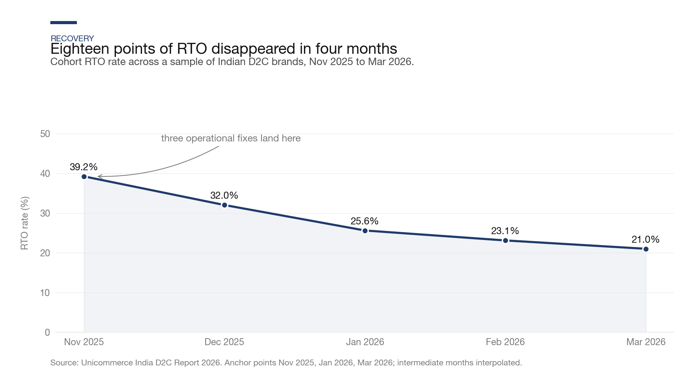
The three fixes, ranked by estimated EBITDA impact
| Fix | What it addresses | Approx EBITDA uplift |
|---|---|---|
| Prepaid or BNPL incentive at checkout | Shifts payment-mode mix — removes the free-exit option before it exists | +400 to +600 bps |
| Pin-code courier routing + address verification | Cuts the 20–25% of RTO that is genuinely logistics | +150 to +300 bps |
| 24-hour e-invoice cancel + fast credit-note cycle | Protects output GST already booked on returned sales | +100 to +200 bps |
The scale of this is embarrassing once you work it out. On a 1,000-orders-per-month brand with 60% COD and 26% COD-RTO, preventing the problem via WhatsApp COD confirmation costs about ₹69 a month. Processing those same RTOs costs ₹70,000 to ₹1.4 lakh a month, fully loaded. Prevention is roughly a thousand times cheaper than processing, and most brands are still processing.
The frame
Most of the conversation about Indian e-commerce returns starts from the wrong question. The question people keep asking is “how do we reduce returns?” That leads to blunt answers. Block COD. Shorten the return window. Charge for returns. Kill final-sale discounts.
All of those make the top line bleed. The better question is narrower, and it’s the one worth putting on the wall of any D2C brand operating in India today:
Three concrete illustrations of how different operators have answered that:
Honasa took a 200 bps EBITDA hit in a single quarter because they couldn’t phase a distribution transition cleanly. They still haven’t fully recovered. Nykaa Fashion is 300 bps away from EBITDA-breakeven and the lever to close the gap is almost entirely about returns. Myntra, meanwhile, sidestepped the problem by choosing not to hold inventory, pushing the returns cost to the brands on its marketplace, and reported ₹548 crore of profit last year.
Three different answers. One shared question underneath: where should the returns cost sit, and who should pay to prevent it?
Three things are worth watching over the next six to twelve months. Whether Nykaa Fashion’s fulfilment line keeps compressing — if it stalls, the apparel D2C ceiling becomes a structural story the market has to price. Whether GSTN tightens Section 34(2) enforcement; the Invoice Management System went live in October 2024 and credit-note audit volumes have reportedly been rising. And whether any mainstream Indian marketplace other than Meesho copies the dual-pricing checkout, which on current evidence remains the single clearest no-cost margin lever available to the category.
Sources
Datasets: Unicommerce India D2C Report 2026, Fynd Black Friday 2025, DHL India E-commerce Insights 2025.
Cost models: Amazon Shipping India, ClickPost / topedgeai, Pure Parcel, Dongolabs.
Listed filings: Honasa Nov 2024 analyst call, Nykaa FY25 Investor Presentation, Myntra Designs FY25 RoC filing.
Tax: CBIC Section 34 CGST, Grant Thornton GST Booklet 2026.
BNPL and no-return coupons: PATOYS COD vs BNPL India 2026, Snapmint — How to Reduce RTO, BNPL conversion & retention study — JIER 2025, Meesho dual-pricing analysis, PYMNTS no-return discount research.
BNPL AOV / conversion lift evidence: JSRT Chennai field study 2025, n=350, Stripe BNPL A/B test, 150,000 sessions, Visa Global BNPL Paper, JSMA BNPL loyalty study India 2025, n=513.
Payment gateway and merchant fees: Razorpay public pricing (2026), Cashfree pricing, Shiprocket COD rate card via Selzix.
Primary research: Finding the Right Fit — author’s 2021 survey of 22 urban Indian online shoppers on size-chart habits, within-brand size-variance awareness, and self-rated fit confidence. Convenience sample fielded 27–28 January 2021, early in the author’s PM career and first exposure to the returns problem. Available on request.